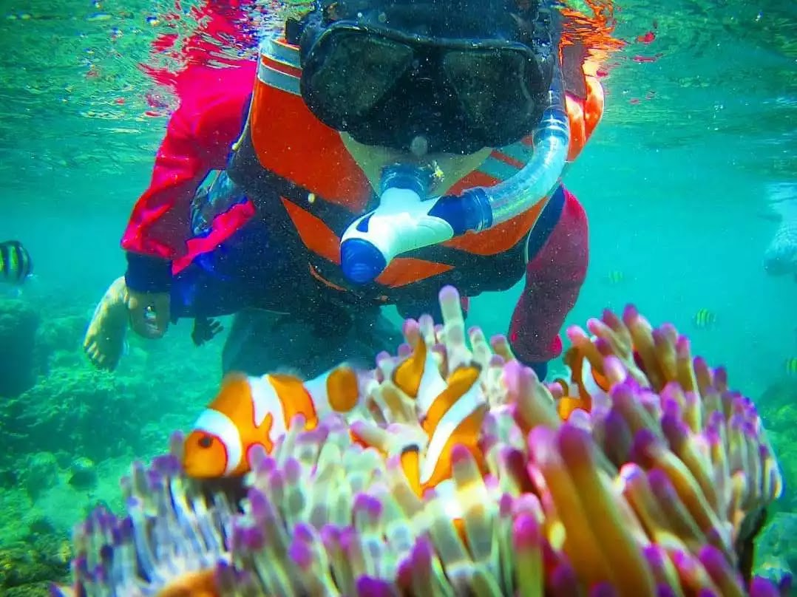
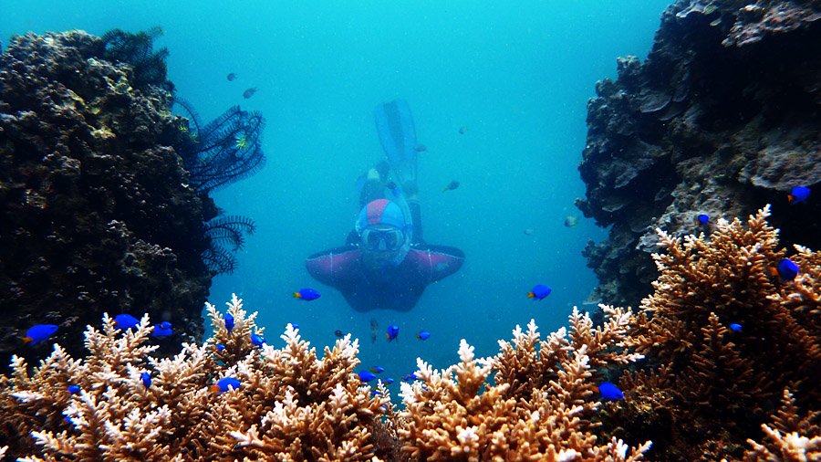

| HOME | Biodiversitas | Watersport | Penginapan | Masjid Apung |
BIODIVERSITAS Kekayaan biodiversitas yang dimiliki Pulau Tegal Mas, terutama alam bawah lautnya, dinilai tak kalah dengan lokasi lain di Indonesia. Sangat cocok untuk dieksplor setiap orang yang gemar melakukan aktivitas snorkeling atau diving. Disini wisatawan akan dimanjakan dengan keindahan berbagai biota laut, mulai dari terumbu karang, anemon, hingga berbagai jenis ikan yang menjadi penghuninya. Jika beruntung, di sini Anda juga bisa menemui satwa laut eksotis lain, seperti penyu hijau (Chelonia mydas) hingga hiu sirip hitam (Carcharhinus limbatus). Sebagai sarana penunjang, tersedia pula dive center serta snorkeling center yang bisa dimanfaatkan pengunjung untuk informasi dan penyediaan peralatan penyelaman.  | ||||
|---|---|---|---|---|